Activities of our trip in Porto
Day 1
 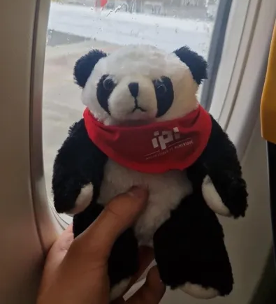
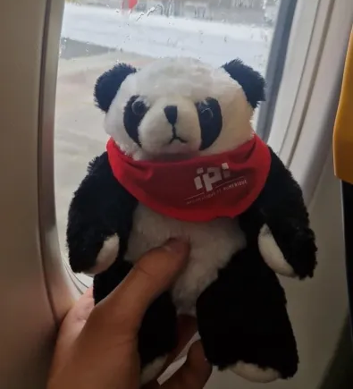

 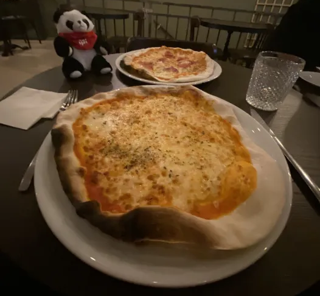
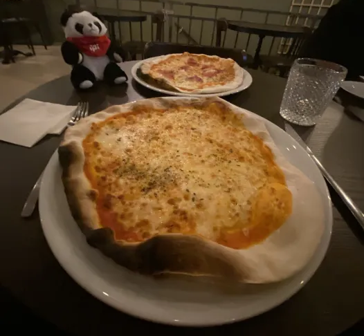

Day 2
 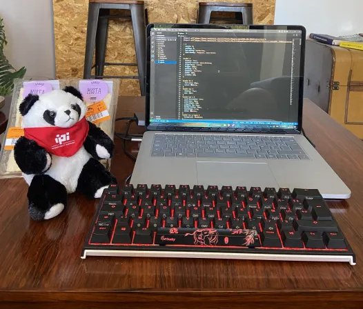
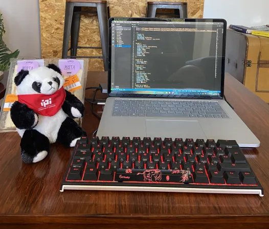
 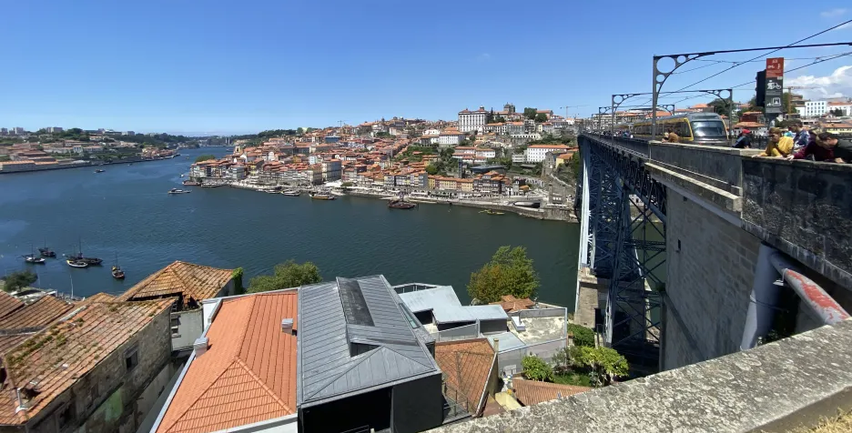
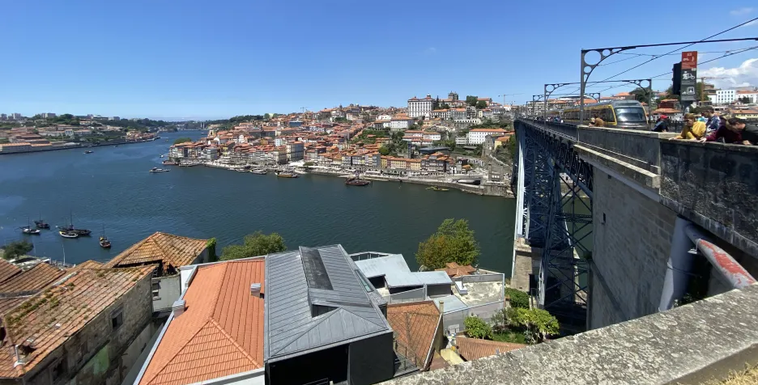


 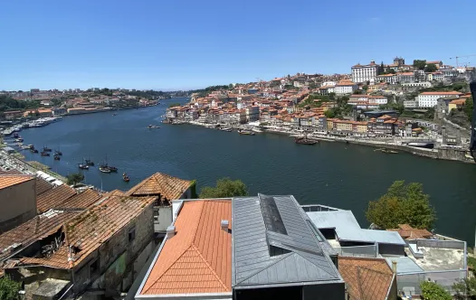
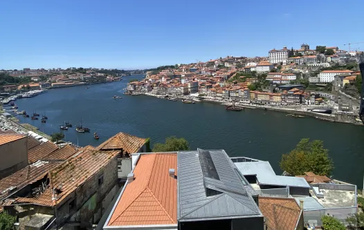

Day 3

 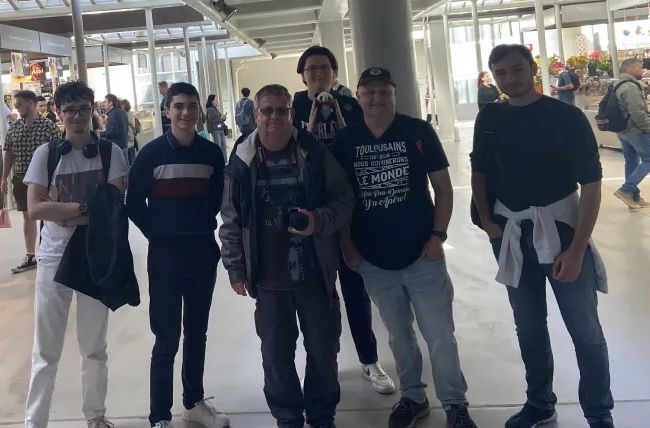
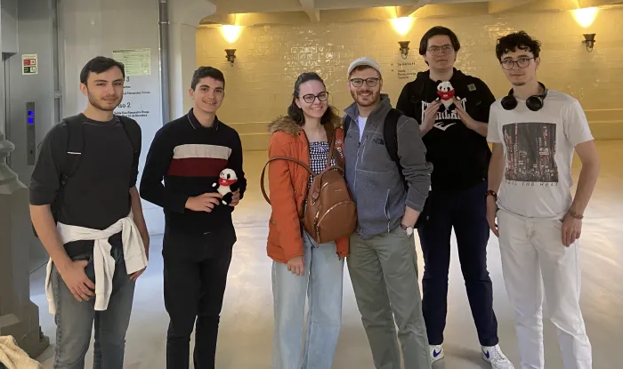
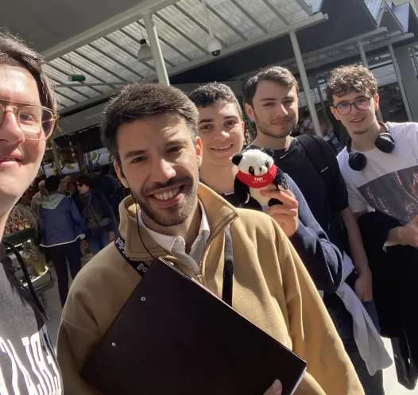
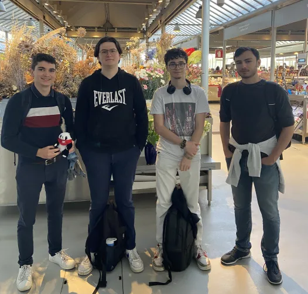
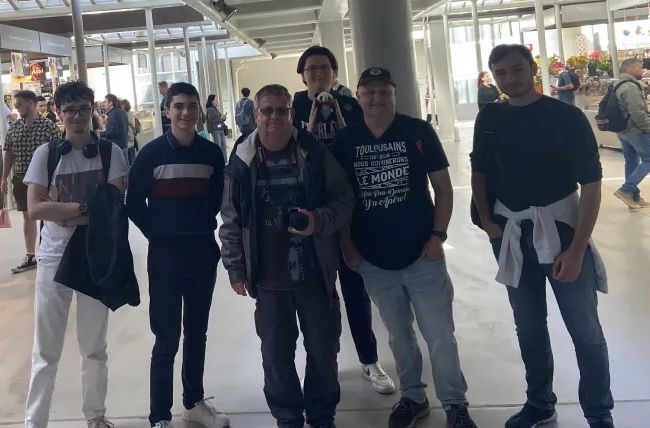
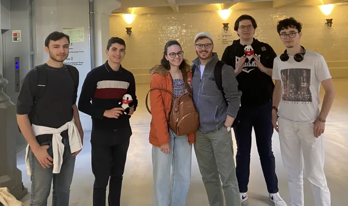
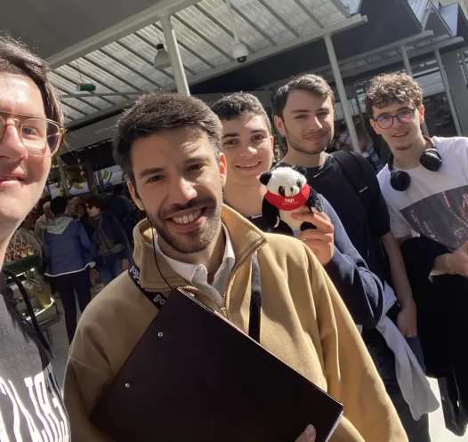
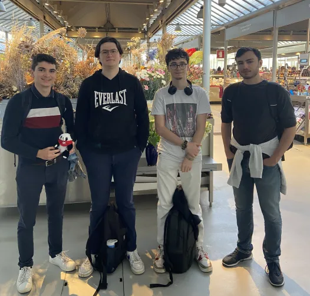


The survey
The german one
Why are you here ?
I am in this city to make a stop before continuing my trip around Portugal. I'm on this trip with my girl friend.
What is your nationality
We live in germany.
Where do you sleep during your trip ?
We are currently sleeping in Porto. But as we go from city to city, we sleep in a hotel in the city where we are.
What is your opinion about France ?
I think France is a good country and I'm learning French.
Two couples from Toulouse
Why are you here ?
We came here to make a stop before taking the road again to go to the Chapel of Angels. We heard about this place so we came to visit.
What is your nationality
We are from Toulouse (in France. One of them even wore a Toulouse Stadium T-shirt !).
Where do you sleep during your trip ?
We have an apartment in Gaia
How many time are you in Porto ?
We stay a week to visit Porto during holidays
What is your opinion about France ?
What is your favorite activities during your trip ? Our favorite activities are a city tour by bus and a cruise on the Douro River.
The brazilian couple
Why are you here ?
What is your nationality
We are Brazilian and we come from São Paulo but we live in Belgium.
Where do you sleep during your trip ?
What is your halt of your trip ?
We had been to Lisbon and we are in Porto to visit for a little while. And we will return to Lisbon after our visit to Porto.
What is your opinion about France ?
I think France are a beautiful country with a big cultural topics like food or architecture.
Should we go to brazil, what could we see ? If we come to Brazil and especially to São Paulo, we can go to the market foot. In my opinion it's a beautiful market.
The portuguese one
Why are you here ?
He work here, and this place for his, are beautiful and he thinks this place is magnificent.
What is your nationality and where do you live ?
I'm Portuguese and I live in the vicinity of Porto, 15 minutes from the city center.
Since how many time ?
Since I xas young.
What is you favorite place in your city ?
Praça do Bolão, Dragon Stadium and many others, I love this city.
What is your opinion about France ? I think is a magnificent country with lot of history and also, a great culture with the Eiffel Tower, multiculturalism, sport and many other things.
Day 4


Day 5


The cruise
We did a cruise on the Douro river and saw the six bridge of Porto:
The "Ponte Dom-Luís":
The Louis I Bridge is one of the bridges located on the Douro in Portugal, connecting Porto to Vila Nova de Gaia. Built between 1881 and 1886 by the engineer Théophile Seyrig, disciple of Gustave Eiffel, it closely resembles the Maria-Pia Bridge, located further upstream, but has an additional lower deck for road traffic. It is listed as a UNESCO World Heritage Site.
The "Ponte Infante Dom Henrique":
The Ponte Infante Dom Henrique, also known as Ponte do Infante, is a road bridge that connects Vila Nova de Gaia to Porto, over the Douro River, in Portugal. Named in honor of Infante D. Henrique, born in Porto, it is the most recent bridge that connects Porto and Gaia. It was built to replace the upper deck of the Luís I Bridge, which was then converted for use by the "Yellow Line" (Hospital de São João/Santo Ovídio) of the Porto Metro.
The "Ponte maria pia":
The Maria Pia Bridge is a large railway viaduct which crosses the Douro2 in Porto (Portugal). This metal arch bridge, the first railway bridge to join the two banks of the Douro, was designed by Gustave Eiffel and his associate Théophile Seyrig within the construction company Eiffel et Cie. Opened in November 1877, it was decommissioned in 1991, replaced by a modern structure, the Ponte de São João. It is named in honor of Maria Pia of Savoy (1847-1911), then queen consort of Portugal.
The "Ponte de São João":
The São João Bridge is a railway infrastructure that transports the Northern Line over the Douro River, close to the city of Porto, in Portugal. Built to replace the already century-old D. Maria Pia Bridge, it entered service on June 24, 1991.
The "Ponte de Freixo":
They are actually two bridges built side by side and spaced just 10 cm apart. Each deck has 4 traffic lanes and is made up of 8 spans, the longest of which is 150 meters.
The "Ponte Arrábida":
The Arrábida Bridge is an arched bridge over the Douro River that connects Porto to Vila Nova de Gaia, in Portugal. Since the 1930s, it has been necessary to create alternative connections to the old bridges in order to respond to the growing flow of road traffic. At the time of its construction in 1963, the bridge had the largest reinforced concrete arch of any bridge in the world.
Day 6


Day 7


Day 8


Day 9


Day 10


Day 11
 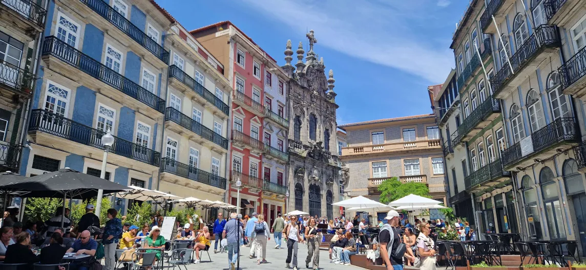
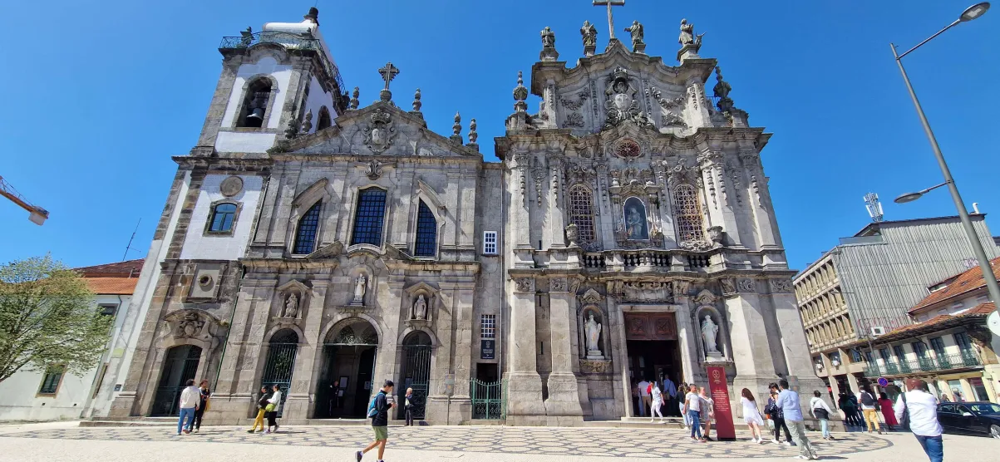
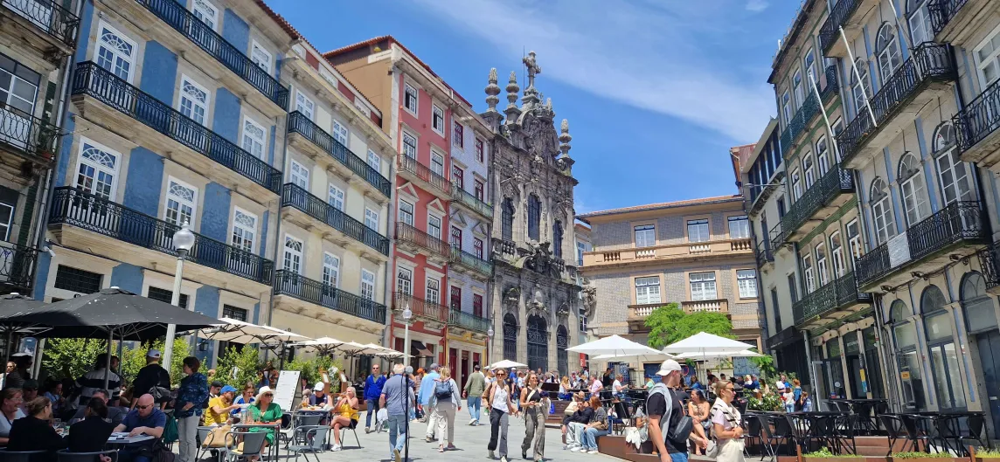
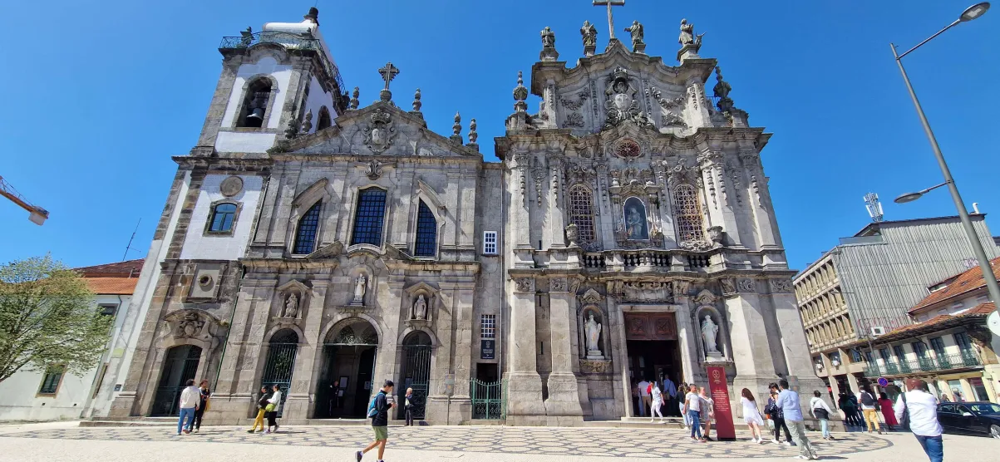


Day 12